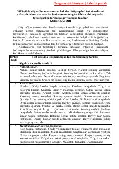

MF2019-yilgi oliy ta'limga kirish test sinovlari uchun matematika fani kodifikatori.
Ushbu hujjat 2019-yilda oliy ta'lim muassasalari bakalavriatiga kirish test sinovlari uchun matematika fani bo'yicha talablar va mavzular tarkibini belgilaydi. Kodifikator umumiy o'rta va o'rta maxsus ta'lim dasturlari asosida tuzilgan bo'lib, abituriyentlarga test savollari mazmuni haqida ma'lumot beradi.